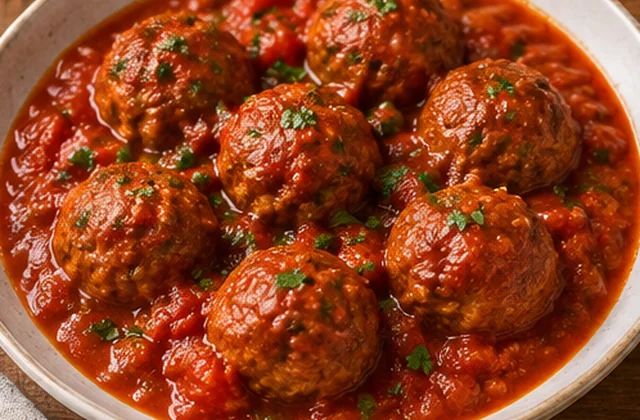

Tu cocina,
con más ideas.
Dime qué tienes en casa. Yo te ayudo a elegir qué cocinar, planificar 7 días y comparar cuánto cuesta tu cesta. Todo pensado para el día a día.

El control lo tienes tú.
Abre tu nevera inteligente
Organiza tu despensa y descubre qué cocinar antes de comprar más.
Siete días sin pensar de más
14 platos, raciones ajustables y coste de envases calculado.
Precios claros para elegir
Consum, Mercadona o una cesta combinada por producto.
Hoy cocinas algo bueno.
200 ideas variadas para cocinar bien, con productos sencillos y precios orientativos.
* Los importes por ración son estimaciones del ingrediente consumido; no incluyen transporte, energía ni necesariamente la compra de envases completos. Comprueba los precios y alérgenos antes de comprar.
Tu semana resuelta,
sin complicarte.
Indica cuánto quieres gastar, para cuántas personas cocinas y tus preferencias. MIGA te propone catorce platos con sus cantidades y prepara la lista de compra.
Tu nevera, más inteligente.
Apunta las cantidades que tienes en casa. MIGA las descuenta de la compra, detecta lo que conviene aprovechar pronto y te propone platos que encajan.
Haz una foto de tu lista de la compra
Sube una foto o usa la cámara del móvil. MIGA intentará reconocer los alimentos y sus cantidades para que no tengas que escribirlo todo.
🔒 La fotografía se analiza en este navegador y no se guarda en el servidor. El reconocimiento necesita conexión a Internet la primera vez. Revisa los resultados antes de importarlos.
Al activar el lector de fotos, se descargan componentes de jsDelivr. La imagen se interpreta en tu navegador y no se envía a los servidores de MIGA. Consulta la privacidad.
¿La foto no se lee bien? Pegar la lista como texto
Revisa los productos detectados
Corrige cualquier alimento o cantidad antes de guardarlo. Los nombres no reconocidos podrás seleccionarlos manualmente.
Añade un alimento
Indica cuánto tienes en gramos, mililitros o unidades, según el producto. La fecha es opcional.
Qué aprovechar primero
Prioriza los productos próximos a la fecha que has indicado.
¿Qué puedo cocinar hoy?
Recetas reales del catálogo con lo que ya tienes. Priorizamos cantidades disponibles y productos con fecha próxima. Si te falta algo, abre la ficha exacta de Consum o Mercadona.
Las cantidades proceden de tu inventario. Una fecha no determina si un alimento es seguro: revisa el estado del producto y su etiqueta. Las recetas adaptadas requieren revisar tiempos y alérgenos.
Alimentos guardados
Crea tu plato.
Elige entre todos los ingredientes de MIGA y descubre qué puedes cocinar hoy. Te recomendamos recetas reales y te decimos qué tienes y qué te falta.
¿Ya has apuntado tus alimentos? Utiliza lo que tienes en tu nevera para encontrar recetas al instante.
¿Qué tienes en casa?
Tu selección
¿Qué te apetece?
Platos recomendados
* Precios orientativos de ingredientes utilizados (Consum), sin tener en cuenta cantidades que ya tienes. Las recomendaciones utilizan recetas del catálogo, no inventan preparaciones. Para personas celíacas, comprueba certificación sin gluten y contaminación cruzada.
Tu lista de la compra.
Agrupamos los ingredientes de los platos elegidos y estimamos los envases que necesitas comprar.
Todavía no tienes menú
Genera un menú semanal para preparar la lista automáticamente.
¿Qué tienes ya en casa?
La compra descuenta automáticamente tu nevera. Si quieres corregir un ingrediente puntual, usa su desplegable de cantidad; puedes restablecerlo cuando quieras.
Ingredientes agrupados
Los precios de MIGA son orientativos y pueden variar según el código postal, las ofertas y la tienda. Consum permite guardar listas en su propia cuenta, pero MIGA NO puede agregar artículos automáticamente a la cesta de ninguna tienda: el asistente abre las fichas para añadirlos manualmente. Las cantidades se expresan en envases aproximados y pueden diferir de un producto concreto.
Precios claros, sin inventos.
Incluimos todo el catálogo de ingredientes, incluso los extras y sustituciones. Indicamos cuáles hemos contrastado con el catálogo oficial, cuáles proceden de fuentes externas y cuáles son simples estimaciones.
| Producto / formato | Mercadona | Consum | Fuentes |
|---|
Las fechas de consulta se muestran por producto cuando hay una fuente registrada. Los importes orientativos no se deben usar como presupuestos garantizados. No hay conexión automática con el inventario ni con precios en directo. Las fichas externas pueden cambiar.
Contacta con MIGA.
¿Quieres sugerir una receta, avisar de un error o proponer una colaboración? Te escuchamos.
Estamos aquí para ayudarte
Los mensajes se registran para que podamos responderte. Cuando se configure el correo del proyecto, también se enviarán a la bandeja de entrada.
miga.ahorra@gmail.com ↗Esta dirección es la propuesta del proyecto; para recibir correos es necesario crear y activar la cuenta si aún no existe.La comunidad, por dentro.
Solo visible para cuentas con permisos de administración.